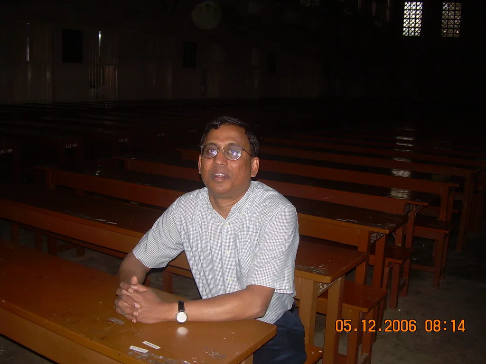

제63회 세무사 자격시험 수석 합격자를 둘러싸고 이른바 'AI 안경'을 이용한 부정행위가 있었던 것 아니냐는 의혹이 빠르게 번지고 있다. 1차 시험에서 160문항 가운데 단 한 문제만 틀렸고, 수험생 대부분이 고전한 과목에서 만점을 받았다는 사실이 알려지면서다. 아직 부정행위를 뒷받침하는 직접적인 증거는 공개되지 않았지만, 세무사 업계와 수험생들 사이에서는 진상을 밝혀야 한다는 요구가 거세다.
논란의 핵심은 점수 분포다. 해당 합격자의 성적과 합격 수기는 한 조세 전문지를 통해 공개됐는데, 특히 세법학개론 만점이 주목을 받았다. 이 과목의 전체 응시자 평균은 30점 남짓에 그쳤고, 과락률은 74%를 넘었다. 응시자 네 명 가운데 세 명꼴로 기준 점수를 넘지 못한 과목에서 혼자 만점을 받았다는 점이 의심을 키웠다. 직접 시험을 치러 본 경력 세무사가 40점에도 못 미치는 점수를 받았다는 보도까지 나오며 논란은 더 커졌다.
현직 세무사와 수험생들은 시간 제약을 문제로 든다. 1차 시험은 문항당 평균 1분 남짓의 풀이 시간이 주어지는데, 이 안에 복잡한 계산 문제까지 거의 모두 정확히 풀어내기는 현실적으로 어렵다는 주장이다. 한국세무사회도 진상 조사를 공식적으로 촉구하고 나섰다. 자격시험의 공정성은 곧 자격증의 신뢰와 직결되는 만큼 업계 차원에서 그냥 넘길 수 없다는 분위기다.
시험을 시행한 한국산업인력공단은 일단 현장에서 이상 징후는 없었다는 입장이다. 공단은 13일 해당 시험실 감독위원 4명에게 확인한 결과 부정행위를 의심할 만한 행동이나 특이사항은 발견되지 않았다고 밝혔다. 다만 해당 시험실에는 CCTV가 설치돼 있지 않았던 것으로 알려졌다. 합격자는 감독관 바로 앞자리에서 시험을 치른 것으로 전해졌다. 공단은 2차 서술형 답안지에 대해서도 전문가 검토를 진행하고 있다고 설명했다.
당사자는 법적 대응을 준비하고 있다. 수석 합격자는 법무법인을 법률대리인으로 선임하고, 필요한 절차에 성실하게 임하겠다는 입장을 밝혔다. 의혹이 사실로 확인되지 않은 상황에서 개인에 대한 지나친 추측과 신상 공개는 또 다른 피해를 낳을 수 있다는 우려도 나온다. 객관적인 조사 결과가 나오기 전까지는 판단을 유보해야 한다는 목소리가 함께 제기되는 이유다.

이번 논란의 배경에는 빠르게 발전한 스마트 안경 기술이 있다. 카메라와 AI 기능을 갖춘 안경은 겉모습이 일반 안경과 거의 구별되지 않아, 시험장에서 문제를 촬영해 답을 받아 보는 데 악용될 수 있다는 우려가 꾸준히 나왔다. 올해 국가자격시험에서 실제로 AI 안경을 이용한 부정행위가 여러 건 적발되기도 했다. 산업인력공단은 국정감사에서 스마트 안경을 식별하는 별도 감독 인력을 두겠다고 밝힌 바 있다.
논란은 대학수학능력시험을 앞둔 교육 현장으로도 번지고 있다. 교육당국은 AI 글라스를 반입 금지 물품에 포함하고, 시험장마다 스마트 안경 판별 전담 요원을 배치하기로 했다. 그러나 교원단체들은 육안 감독만으로는 착용 여부를 가려내기 어렵다며 전문 탐지 장비 도입을 요구하고 있다. 기술 발전 속도를 시험 관리 제도가 따라가지 못하고 있다는 지적 속에, 이번 조사 결과가 향후 시험 감독 체계 개편의 분수령이 될지 주목된다.